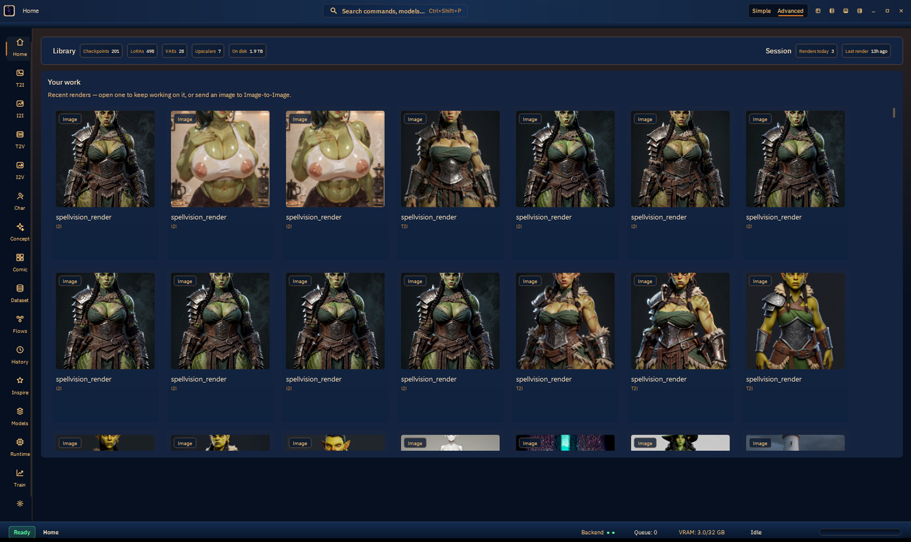
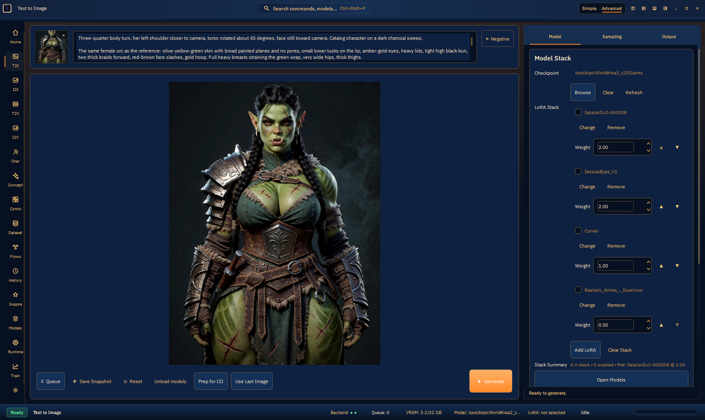
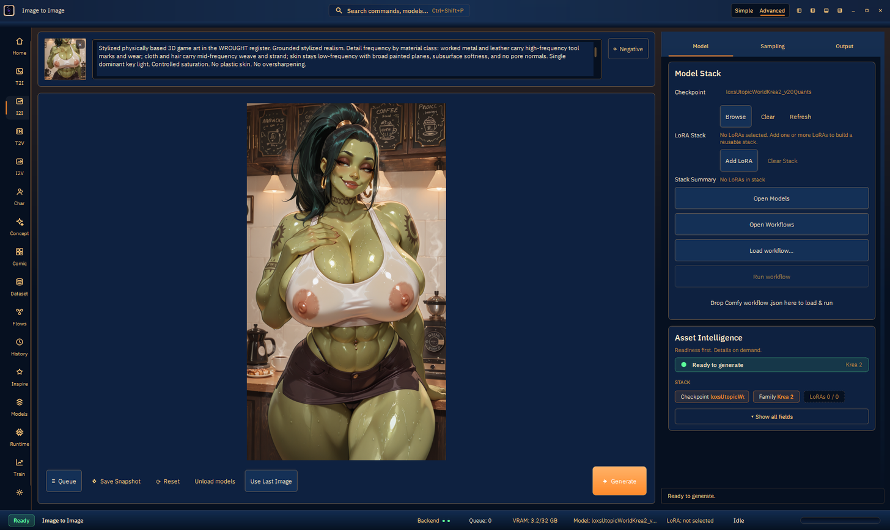
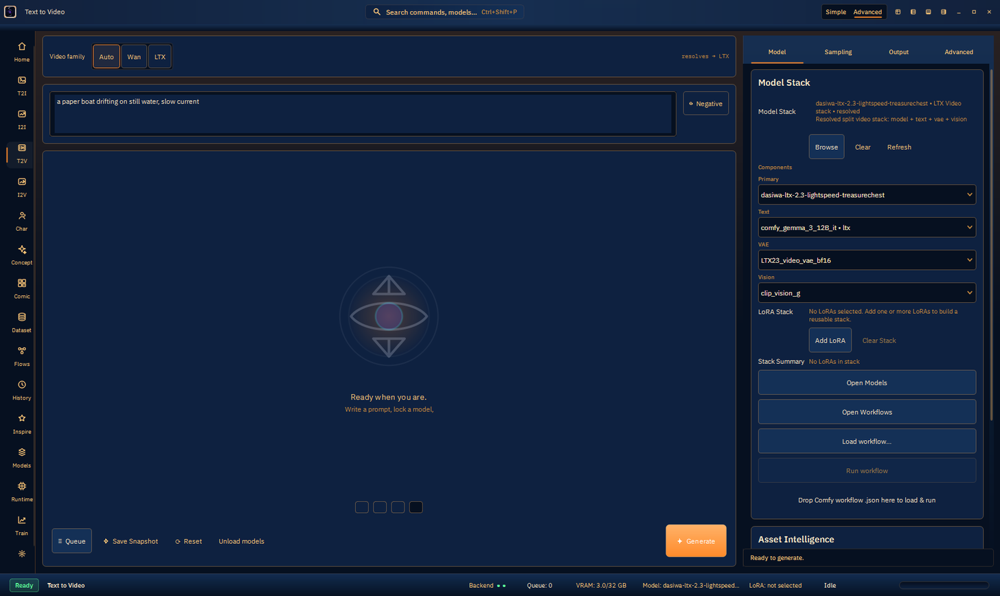
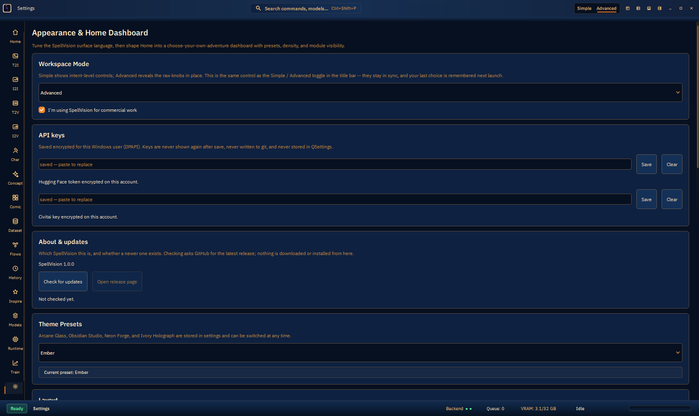

Desktop AI generation studio: Qt6 cockpit + Python worker + ComfyUI execution. The product is the abstraction — intent in, wired graph out. This report is from live UI on 2026-09-11 plus source. It is not a ship certificate.
docs/design/55_t7_ship_walkthrough.html) and pictured dests exist for several pages. T1–T6 are PARTIAL. I2V that ignores a keyframe is not S. Theme recolors below: live captures are the running Ember session. The other four palettes are specified from ThemeManager; they were not cycled live in this pass (would overwrite the owner preset).Three processes: SpellVision.exe (Qt), worker 127.0.0.1:8765, ComfyUI 127.0.0.1:8188 (live tree C:\sv_comfynext_v034\ComfyUI v0.34.0). Generate builds a graph SpellVision owns; Comfy executes it.
| Surface | Status | Live dest pictured? |
|---|---|---|
| T2I | Works (krea2 native) | Yes — t2i_krea2_live.png |
| I2I | Works (SDXL + native) | Yes — i2i_sdxl_live.png |
| T2V Wan | Works | Yes — t2v_wan_live.mp4 |
| I2V Wan | Following dest MAE 9.25 after expert-guard | Yes — bad clip kept as counterexample |
| T2V LTX | Dest exists; frame 0 not paper-boat prompt | Partial |
| Character / Comic / Concept / Dataset | Dest files exist | Yes; Concept subject mismatch |
| Batch N / T2I-with-reference dest / T2 drop | Source landed | Not live-pictured |
| Chain / Gen3D | Compiled, rail-hidden unless SPELLVISION_SHOW_ALL_MODES=1 | — |





Five first-class presets in ThemeManager::Preset. Default for new installs is ArcaneGlass (one-time QSettings migration). This machine is on Ember with Matte Instrument style.
| Preset | Accent | Surface0 | Character |
|---|---|---|---|
| Arcane Glass | #7C5CFF | #0A0B12 | North star. One violet light; platinum hairlines; cyan = ready only. |
| Obsidian Studio | #7aa2ff | #0b0f16 | Steel-blue, cooler panels. |
| Neon Forge | #34b4ff | #070b12 | Cyan/magenta secondary (#d55cff / #67f4ff). |
| Ivory Holograph | #6f52e6 | #eff3fa | Only light theme. Dark ink on near-white. |
| Ember (live) | warm orange on navy | token Surface0 | Permanent fifth preset. Live session. |
Independent of palette:
| Control | Does |
|---|---|
| Logo badge | Brand mark. Dark vs Light asset by theme (Ivory uses Light). Tooltip “SpellVision”. |
| Context label | Current page name (Home, Text to Image, Settings, …). |
| Search pill | Opens command palette. Shortcut Ctrl+Shift+P. Searches commands, models, nav. |
| Simple / Advanced | App-wide disclosure. Advanced reveals knobs in place; never moves them. Same as Settings → Workspace Mode. Live session: Advanced. |
| Customize Layout | Title-bar layout button — jumps layout picker (Instrument / Canvas / Workspaces). |
| Toggle Primary Sidebar | Shows/hides the left mode rail. |
| Toggle Bottom Panel | Shows/hides bottom telemetry strip. |
| Toggle Secondary Sidebar | Shows/hides secondary pane when the layout has one. |
| Min / Max / Close | Standard window chrome on the custom title bar. |
Flat icons, no CREATE/MANAGE/SYSTEM headers. Chain and 3D hidden unless SPELLVISION_SHOW_ALL_MODES=1.
| Button | Shortcut | Does |
|---|---|---|
| Home | Ctrl+1 | Library counts + Your work gallery. Click a still → keep working / send to I2I. |
| T2I | Ctrl+3 | Text-to-image cockpit. Optional reference still (submits as i2i). |
| I2I | Ctrl+4 | Image-to-image. Requires a source still. |
| T2V | Ctrl+5 | Text-to-video. Family Auto/Wan/LTX. No still slot. |
| I2V | Ctrl+6 | Image-to-video. Keyframe required. I2V experts only (T2V experts refused). |
| Char | Ctrl+Shift+C | Character Studio stages. Concept → plates → pack. Mesh/hair/beauty product bar is v2. |
| Concept | Ctrl+Shift+R | Concept Reference Lab — multi-view packs, Send→Character. |
| Comic | Ctrl+Shift+M | Script → beats → T2I panels → page. I2V-from-page is v2. |
| Dataset | Ctrl+Shift+D | Prompt list → N T2I jobs. Not the trainer. |
| Flows | Ctrl+7 | Imported Comfy workflows: list, readiness, Launch, Download missing. |
| History | Ctrl+8 | Past jobs. KEEP/NO overlay. Requeue. Not a full media library yet. |
| Inspire | Ctrl+9 | Moodboard KEEP/NO; send to T2I/I2I with the still. |
| Models | Ctrl+0 | Stage-1 inventory, Inspect, bind/use, drop-copy (never rename file). Not LoRA Manager. |
| Runtime | Ctrl+Shift+U | Comfy manager: nodes, restart, paste-link import, Dual-PC consent/Enable. |
| Train | Ctrl+Shift+T | Launches external Sohya_kk. Not an in-app trainer. |
| Prefs | Ctrl+, | Settings (Appearance, keys, About, Home dashboard, dual-PC share). |
| Chip | Does |
|---|---|
| Ready / Busy | Semantic ready (cyan/green) vs generating. Not a button. |
| Page | Current mode name. |
| Backend | Worker + Comfy health dots. |
| Queue | Pending job count. |
| VRAM | Used/total GB. DynamicVRAM may keep nvidia-smi high after Unload. |
| Model / LoRA | Selected checkpoint display + LoRA summary. Expanding; elide on narrow. |
| Idle / progress | Job progress when running. ETA hides under 1280px. |
One ImageGenerationPage per mode. Inspector tabs: Model / Sampling / Output; video adds Advanced. Simple hides pixel math; Advanced reveals in place.
| Control | Does |
|---|---|
| 84px dropzone | T2I/I2I/I2V: drop or click a still. T2I-with-still submits as i2i. T2V: no still slot. × is 18px glass, not a white hole. |
| Prompt editor | Positive prompt. File drops are not stolen as text — they go to chip/canvas/workflow. |
| Negative | Reveals negative prompt field. |
| Canvas | Preview + drop target. Still → chip. .json → workflow import (including T2V). |
| Control | Does |
|---|---|
| Queue | Enqueue without focusing the run (queue strip). |
| Save Snapshot | Writes current request/settings snapshot. |
| Reset | Restores family operating-point defaults (Simple restore must not clobber OP). |
| Unload models | Runtime VRAM free. Disable while busy. DynamicVRAM may keep nvidia-smi high. |
| Prep for I2I | T2I: hand last dest into I2I. |
| Use Last Image | Load last dest as the reference/keyframe. |
| Generate | Hero primary. Builds allow-listed worker request; T2I+still remaps to i2i in builder, enqueue, TCP, task_of, queue display. |
| Control | Does |
|---|---|
| Checkpoint / stack label | Selected model display (sidecar model_name; file on disk unchanged). |
| Browse / Clear / Refresh | Catalog picker (scans extra model roots F: and D:), clear selection, rescan. |
| Family chips (video) | Auto / Wan / LTX. Auto unresolved → pick a stack (no silent LTX fallback). F3 chip hidden. |
| Primary / Text / VAE / Vision | Video component combos. Catalog subdir names must survive (wan/, ltx/, clip_vision/). |
| High/Low noise (Wan dual) | Expert pair pickers. I2V must be i2v experts. |
| LoRA stack | Enabled + name + weight per row. Add / Change / Remove / Clear Stack. Weight 0 is off without unload. |
| Open Models / Workflows | Navigate to those rail pages. |
| Load workflow… + drop json | Import Comfy JSON. Download dialog follows node_plan (skip already_installed). |
| Asset Intelligence | Readiness first. Show all fields expands stack/component chips. Footer must match Generate enablement. |
| Control | Does |
|---|---|
| Sampler / Scheduler | SamplingController. Family allow-list from worker. Image has Auto. Not the old 49-entry list. |
| Steps / CFG | Raw knobs. CFG 0 is sayable. Flux maps CFG → FluxGuidance (KSampler stays 1.0). Simple applies family OP (Krea2 Raw 52/3.5 ≠ Turbo 8/1.0). |
| Seed + Random | Random locks the spin and sends a client random int (never seed=0 as “default”). |
| Denoise / strength | I2I/I2V. 0 means leave the input. Flux remaps onto a higher band. |
| Width / Height | Advanced. Simple uses orientation presets. LTX snaps ÷32. |
| Frames / FPS | Video. LTX length (N×8)+1; Hunyuan (N×4)+1; Mochi (N×6)+1. |
| Batch | Advanced-only. N queue jobs, seed+i, cap 32. Simple always sends 1. |
| Speed / operating_point | Advanced-only (Wan Fast, etc.). Must be forwarded or Fast never reaches the worker. |
| High/Low steps + Split | Wan dual-noise only. Stated pair defines total and boundary. |
| High/Low Shift | Wan dual-noise. Range 0–30; 0 is sayable. |
| VAE Tiling | On = tiled decode. Dual-noise now honors it. Hunyuan/LTX Advanced off must actually turn tiling off. |
| +Pos / +Neg embeddings | Advanced, image modes. Injects embedding:<basename> into CLIPTextEncode / diffusers kwargs. Hidden on video. |
| Control | Does |
|---|---|
| Output folder | User dest. Generate copies there then unlinks Comfy output leftover when comfy_root is known. |
| Prefix | Filename stem. Worker rewrites to stem_queue_<id>. |
| Control | Does |
|---|---|
| Preferred output | distilled (default two-stage) vs full (native single-stage). Prompt-API history-requeue still reads the same keys. |
| Primary / Gemma / projection / VAEs | Must reach the graph with ltx/ catalog prefixes. Absolute Gemma 400 is the same class of lie as I2V-on-T2V experts. |
| Vision encoder field | Sent as ltx_vision_encoder_name. Native LTX i2v uses LoadImage + conditioners, not this CLIP. Unread on the production graph (FEATURE leftover). |
| Page | What the controls do |
|---|---|
| Home | Library chips are counts (not buttons). Your work cards open/send the dest. No nested scroll. |
| Character | Stage list 0 Concept → 1 Plates → 5 Clothes → 6 Fit notes → 7 Hair notes → 8 Create contract. Stages 2–4 (3D props) hidden. Name, prompt, SFW/NSFW, model picker (extra roots), House LoRA, Generate concept, Complete look (look_complete), clothes_only views, shrinkwrap scaffold. Generate blocked if checkpoint empty. |
| Concept | Asset chips (body/clothing/building/prop), SFW/NSFW, view pack, Apply pack, Generate, Turnaround, Lock hero, Send→Character. |
| Comic | Script, Split script (fills beats + quoted dialogue balloons), layout preset, per-panel prompt, Generate panel / all remaining, export page.png. Empty panel prompt does not queue. |
| Dataset | Prompt list, images-per-prompt, seed start, canvas (Simple hides seed/canvas), Save Metadata checkbox (real sidecar gate), Generate → N T2I jobs. Merges T2I model stack if unset. |
| Flows | Imported profile list, readiness, Launch (skips already_installed), Download missing (one dialog, nothing fetches until click). |
| History | Table + Detail pane. Media/mode filters. KEEP/NO (K/N; table type-ahead can eat keys — buttons still work). Requeue. LTX display name not “Prompt-API”. |
| Inspire | Moodboard, KEEP/NO, send to T2I/I2I carrying the still path. |
| Models | Inventory, Inspect overlay, bind/use, drop local weight or URL into primary library by filename, display name from sidecar. Stage-2 LoRA Manager not built. |
| Runtime | Comfy root/health, custom nodes, restart, paste-link import. Dual-PC consent checkbox + Browse share folder. Enable Distributed zipballs via worker; refuses while queue_running nonempty. Pack not on disk until Enable. |
| Train | Sohya_kk launcher. Simple family + last Dataset folder + hardware rank/batch exist as partial. Not an in-app trainer. Dual-PC train params do not exist. |
| Settings | Workspace Simple/Advanced default; commercial-use checkbox; HF/Civitai keys (Save/Clear, never shown after save); Check for updates; theme/style/accent/effects/animation; layout cards; Home preset/density; dual-PC share path; About 1.0.0. |
| Layer | Owns |
|---|---|
Qt6 qt_ui/ | Shell, cockpits, studios, request allow-list (WorkerRequestBuilder) |
Worker python/ | Queue, remap T2I+still, native graphs, dest copy+unlink, TCP |
| ComfyUI v0.34.0 | Execution only. Sage / DynamicVRAM in isolated venv. xformers absent. |
Models: extra roots F:/, F:/AI_ASSETS; I2V/LTX companions also on D:/AI_ASSETS/models. Dest: OneDrive Pictures (owner). Worker on :8765 must match the SHA just committed or Python fixes are invisible.
Owner lock: T7 is last, requires Grade S + T1–T6 green. Chat additions are 1.0. Do not merge night/s-t7-bug-hunt until dests match intent.
| Gate | State | Still needed |
|---|---|---|
| Grade S | OPEN | Every page × every family dest. T2I-only is not enough. I2V must follow the still. LTX frame 0 prompt-adherence not S. Batch N dest, T2I-with-reference dest, T2 drop not pictured. |
| T1 Train | PARTIAL | Still external Sohya launcher. Need in-app trainer, family recipes, hardware presets, dual-PC train params. |
| T2 Workflow drop | PARTIAL | Dialog + node_plan skip + live-class scan landed. Live drop of owner JSON not pictured. One Download click, no fetch before. |
| T3 Models | PARTIAL | Stage-1 inventory + drop-copy + sidecar display name. Not LoRA Manager (cache, recipes, pause/resume, trigger words applying on the right family). |
| T4 Optimizations | PARTIAL | krea2 sage vs SDPA timed (~3%). Wan/LTX unopt not timed. xformers absent. Prove used/skipped/broke × family. |
| T5 Simple = optimal | PARTIAL | Family+variant OP on restore/toggle. Speed card Advanced-only. Full family×page live matrix not proven. |
| T6 Dual-PC | PARTIAL | Consent UI + share folder landed. Enable zipball refuses while generating. ComfyUI-Distributed not in custom_nodes until Enable click. No VRAM pooling claim. |
| T7 walkthrough | NOT A CERTIFICATE | HTML exists. Stay honest. No fake greens. |
| Comic lettered page | PARTIAL | Balloons draw in source; no live lettered-page dest. |
| fluxmania fail-close | PARTIAL | Header probe extra-root-aware. Live Generate refuse not pictured. |
| Installer / wizard / tutorial | — | Not this branch’s ship gate. Separate product after 1.0. |
Night hunt remaining Generate holes (source): worker-reconnect after bounce not live-proven; some dest-unlink paths; ltx_vision_encoder_name unread on native graph.
Doc 56: named SemVer. Do not bump CMake off 1.0.0 until 1.0 ships. Do not start 1.1.0 until then.
Do not: replace ComfyUI with pure diffusers; pretend NVPAIR runs diffusion; add 32+24 GB as one VRAM pool.
Captured live PID 43568. Theme left on Ember. Report file: docs/design/57_current_state_report.html.